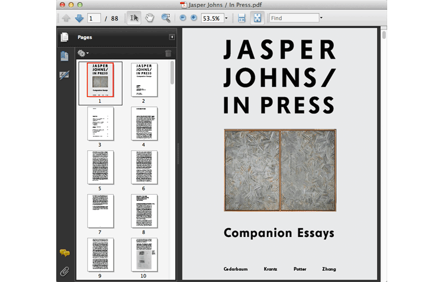

Along with the hardcover catalogue, Harvard also created a digital publication. Rather than a straight e-book version of the print catalogue though, the digital publication has unique content: Four companion essays to the show, written by the undergraduate students who’d helped organize it. Designed and edited to the same standards as the print catalogue, the companion essays were published as a simple PDF and offered for free download on the museum’s website.